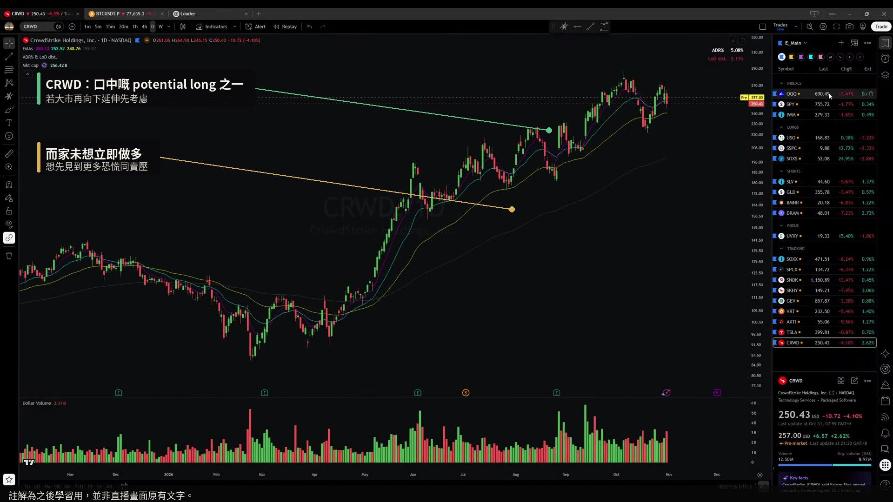
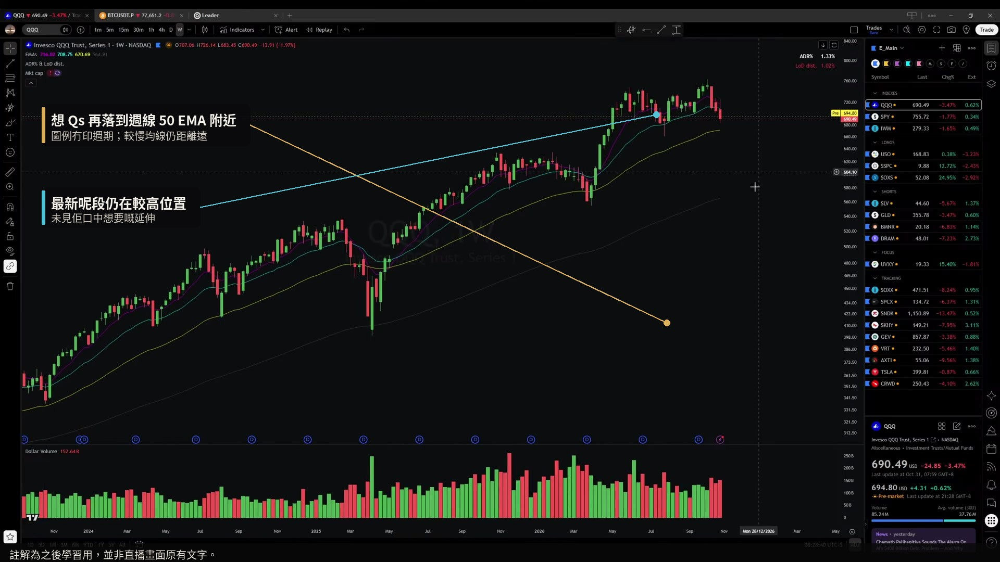
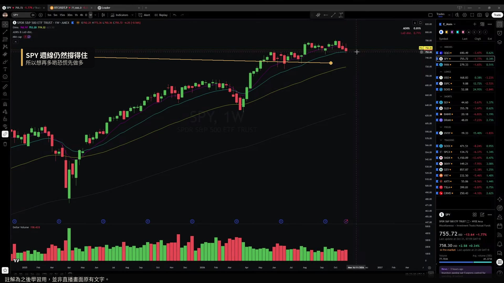

概要
兩隻相對突出，但想先多啲恐慌先做多
16:05 佢話喺今日掃描之前，已把 Tesla 同 Crowd 列作 potential long，條件係大市繼續向下、或者向下延伸得更遠。跟住用 QQQ 週線同 SPY 週線說明：佢希望呢週再多啲賣壓，或者 Qs 可以去到 50 EMA；SPY 仍然撐得幾好，所以想再見到多啲恐慌，先真正想做多。其時亦話好多 AI 相關股票已經睇落好差，只係開始下跌、轉弱。
講 Tesla 同 Crowd 嗰陣，畫面主要停喺 CRWD 日線，未見到 Tesla 圖；Tesla 較完整嘅週線討論在約 1:20，見後面談多年底嗰科。圖例冇印均線週期。
圖一 · 主圖
CRWD：口中嘅 potential long 之一
直播 16:15

原話
And actually before today's scans, I am putting like Tesla and Crowd as the potential long if the market continues lower or is getting extended to the downside. I think they are really the ones that is standing out in this weak market.
其實喺今日掃描之前，我已經把 Tesla 同 Crowd 列作 potential long，如果大市繼續向下，或者向下延伸得更遠。我覺得出喺呢段弱市入面，佢哋係較為突出嘅。
字幕寫 “crowd”；畫面代碼係 CRWD（CrowdStrike）。講 Tesla 時未切到 Tesla 圖。
點樣讀
呢隻被點名，係因為相對大市仍然突出，而唔係因為佢已經叫即場入場。條件講得很清楚：要大市再低、或者延伸得更遠。
結構觀察係讀圖說明。原話只係 potential long，以及弱市中較突出。
圖二
想 Qs 再落到週線 50 EMA 附近
直播 17:00

原話
Yeah, but I would prefer a little bit more on the selling maybe in this week, to maybe the Qs can get to the 50 EMA. The SPY is still like holding up very well. So I think I'll expect a little bit more panic and a little bit more selling before I really would like to take the longs, as right now there are so many AI related names that are looking really bad and they're just starting their downtrend, just turning down.
不過我寧願呢週再多啲賣壓，或者 Qs 可以去到 50 EMA。SPY 仍然撐得幾好。所以我想再見到多啲恐慌、多啲賣出，先真正想做多。因為而家有好多 AI 相關股票睇落已經好差，只係開始下跌、轉弱。
點樣讀
Qs 週線上，較慢嗰條均線仍明顯低過現價。圖例冇寫 50，所以註解只指「口中嘅週線 50」同較慢均線嘅位置，唔把某一條線寫死。
AI 名稱轉弱，係佢想再等嘅理由之一，唔係單獨叫淡某一隻。
圖三
SPY 週線仍然撐得住
直播 17:20

原話
The SPY is still like holding up very well. So I think I'll expect a little bit more panic and a little bit more selling before I really would like to take the longs.
SPY 仍然撐得幾好。所以我想再見到多啲恐慌、多啲賣出，先真正想做多。
點樣讀
SPY 相對 Qs 更抗跌，係佢仲未想做多嘅原因之一。呢句係原話，唔好延伸成預測。
附註
注意事項
- 16:05–16:14 畫面先後經過軟件 ETF、ENTG、NTSK 等，對白已經開始講 Tesla 同 Crowd；本頁只用有對應嘅 CRWD，以及之後嘅 QQQ、SPY 週線。
- 圖例冇印均線週期。提到嘅 50 EMA 係口中講法，註解只指標位置。
- 畫面睇唔到成交價、倉位大細或者損益，所以唔寫死呢啲數字。
免責聲明：呢份係教育拆解，唔係投資建議，亦唔好當作買賣指示。